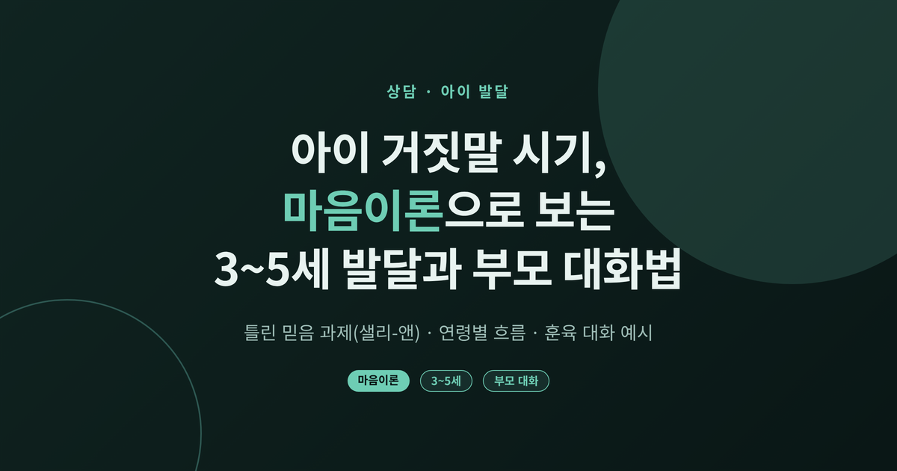
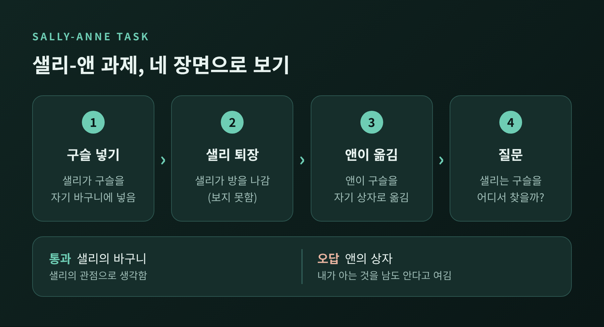
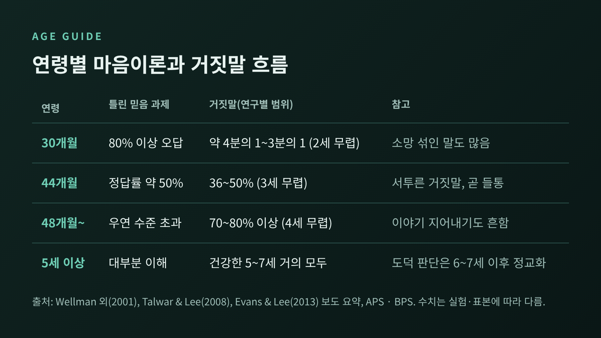
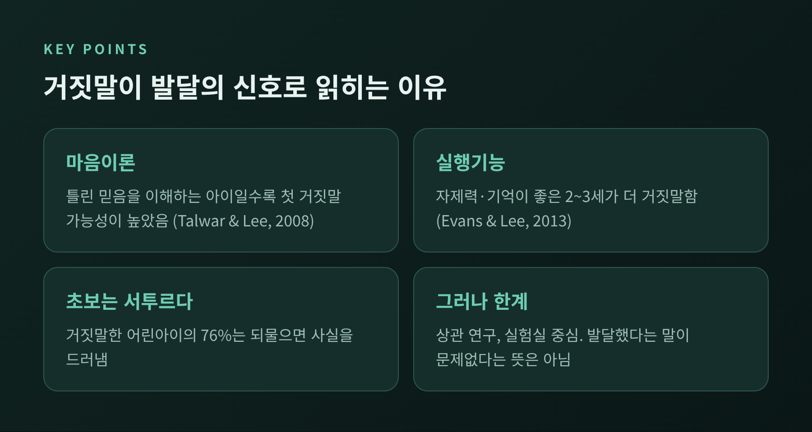
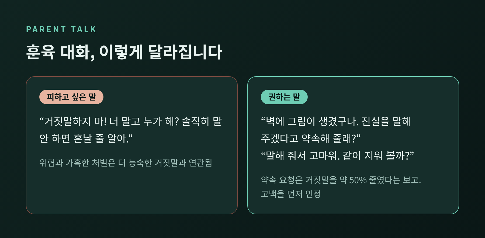
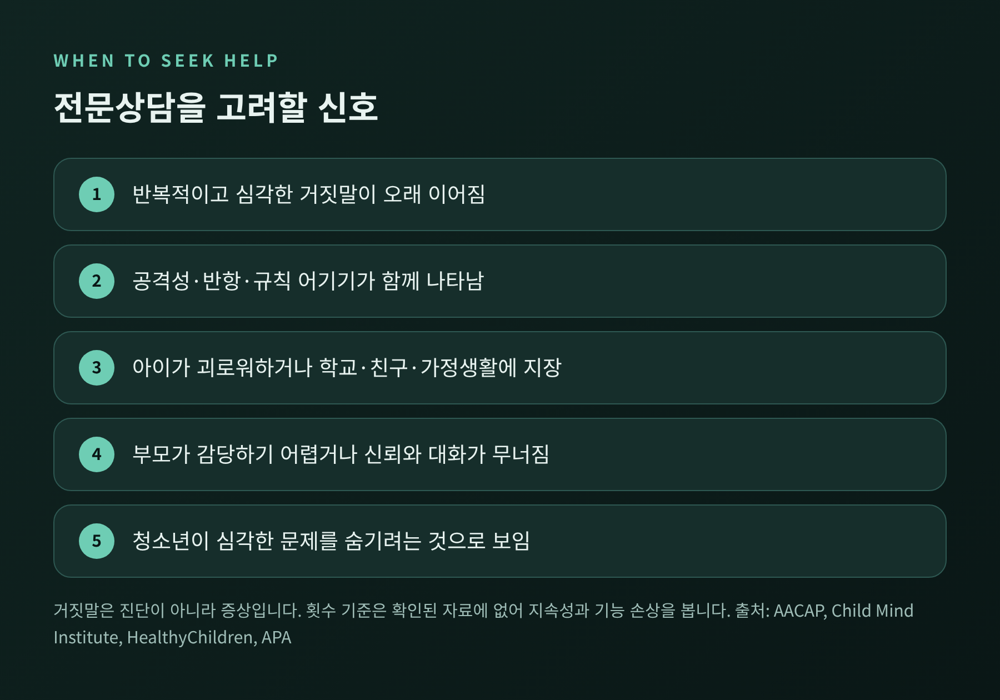

세 줄 요약
오늘은 아이의 거짓말이 왜 3~5세 무렵 시작되는지, 마음이론과 샐리-앤 과제를 통해 풀어 보려 합니다.
이어서 연령별 흐름, 훈육 대화 예시, 전문상담을 고려할 신호까지 차례로 정리하겠습니다.
마음이론(Theory of Mind)은 다른 사람도 나와 다른 생각과 믿음을 가진다는 것을 이해하는 능력입니다.
이 능력을 확인하는 대표 과제가 샐리-앤 과제입니다.
절차는 간단합니다. 샐리가 구슬을 자기 바구니에 넣고 방을 나갑니다. 그사이 앤이 구슬을 자기 상자로 옮깁니다. 돌아온 샐리는 어디에서 구슬을 찾을까요?
정답은 샐리의 바구니입니다. 샐리는 구슬이 옮겨진 사실을 모르기 때문입니다.
아이가 "앤의 상자"라고 답한다면, 내가 아는 것을 남도 안다고 여기고 있다는 뜻입니다.

원 연구(Baron-Cohen 외, 1985)는 61명을 대상으로 했습니다. 일반 아동 27명 중 23명(85%)이 통과했고, 자폐 아동은 20명 중 4명(20%)만 통과했습니다.
다만 이 수치는 위키백과의 요약에서 확인한 것이어서, 원논문을 직접 대조한 값은 아니라는 점을 밝혀 둡니다.
연령별 흐름은 Wellman 등(2001)의 메타분석이 가장 잘 보여줍니다. 77편의 보고서, 178개 연구, 4,000명 이상의 아동을 분석한 결과입니다.
연령이 1년 늘 때마다 정답을 맞힐 오즈가 2.94배 커졌습니다.
4세 전후에 이해가 자리 잡는다는 말이 그냥 나온 것이 아닙니다.

한 가지 단서가 붙습니다. 같은 연령이라도 나라에 따라 정답률이 달랐습니다.
44개월 기준으로 미국은 약 50%, 호주는 약 69%, 일본은 약 40%였습니다. 궤적은 같되 속도는 아이마다, 환경마다 다르다는 뜻입니다.
"우리 아이는 아직 안 하는데" 하고 조급해하실 필요도, 일찍 한다고 놀라실 필요도 없습니다.
거짓말은 이 마음이론의 시기와 겹쳐 늘어납니다. 소스마다 수치에 폭이 있어 범위로 말씀드립니다.
장난감을 훔쳐보지 말라고 한 뒤 훔쳐봤는지 묻는 실험에서 나온 값들입니다. 실험 방식과 표본이 달라 숫자가 조금씩 다릅니다.
확실한 것은 방향입니다. 2세 후반에 시작해 4세 전후로 급격히 늘어납니다.
Talwar와 Lee(2008)는 3~8세 150명을 살폈습니다. 82%가 훔쳐봤고, 그중 64%가 거짓말을 했습니다. 틀린 믿음을 이해하는 아이일수록 첫 거짓말을 할 가능성이 높았습니다.
거짓말을 하려면 상대가 사실을 모른다는 것, 그리고 내가 말로 그 믿음을 바꿀 수 있다는 것을 알아야 하기 때문입니다.
Evans와 Lee(2013)의 2~3세 연구에서는 자제력과 기억 같은 실행기능이 좋은 아이가 더 거짓말을 했습니다. 어린아이가 더 정직한 것은 도덕성이 높아서가 아니라 기술이 아직 미숙해서일 수 있다고 연구진은 해석했습니다.
거짓말한 아이의 대부분(76%)은 장난감이 뭐였는지 묻자 사실을 드러냈습니다. 초보 거짓말은 서투릅니다.

예전에는 거짓말을 곧 인성의 문제로 보았습니다. 지금은 인지 발달의 한 단면으로도 봅니다.
그러나 이 관점에도 선을 그어야 할 부분이 있습니다.
첫째, 인과를 단정할 수 없습니다. 위 연구들은 상관을 보여줄 뿐입니다. 마음이론이 거짓말의 원인이라고 말할 수는 없습니다. 실행기능도 따로 작용합니다.
둘째, 모든 거짓말이 같지 않습니다. 2세 무렵의 "없는 걸 있다고 말하기"는 소망에 가까워 속임이 아닐 수 있습니다. 4~5세에는 이야기를 지어내는 일이 흔합니다.
셋째, 대부분이 실험실 연구입니다. 현실의 가정에서 얼마나 그대로 나타나는지는 확인되지 않았습니다.
"할 수 있게 되었다"와 "해도 괜찮다"는 다른 말입니다. 능력의 발달은 인정하되, 정직의 가치는 가르쳐야 합니다.
아래는 특정 가정이 아닌, 일반화한 예시입니다.
상황은 이렇습니다. 아이가 거실 벽에 낙서를 해 놓고 "내가 안 했어"라고 말합니다.
피하고 싶은 대화입니다.
"거짓말하지 마! 너 말고 누가 해? 솔직히 말 안 하면 혼날 줄 알아."
권하는 대화입니다.
"벽에 그림이 생겼구나. 누가 그렸는지 엄마(아빠)는 궁금해. 진실을 말해 주겠다고 약속해 줄래?"
아이가 "내가 했어"라고 말하면, 먼저 이렇게 받습니다.
"말해 줘서 고마워. 솔직하게 말하는 건 쉽지 않은데 용기 냈구나. 그런데 벽에는 그리면 안 돼. 같이 지워 볼까?"
이 대화에는 근거가 있습니다.

어린아이의 정직한 실수는 거짓말로 취급하지 않는 편이 좋습니다. 이야기책을 함께 읽으며 인물이 왜 그랬는지 이야기 나누는 것도 도움이 됩니다.
아이가 두려움 때문에 거짓말을 한다면, 과잉 반응이 오히려 아이를 계속 숨게 만들 수 있다는 점도 기억해 주시길 바랍니다.
거짓말 자체는 병이 아닙니다. 아동 정신건강 자료는 거짓말을 "진단이 아니라 증상"으로 설명합니다.
그래서 횟수보다 패턴을 봅니다. 하루 몇 번 이상이라는 기준은 이번에 확인한 소스에 없었습니다.
다음과 같다면 상담을 고려해 보시길 권합니다.

이 글은 일반적인 정보이며 진단이 아닙니다. 걱정이 크시다면 아동청소년 상담센터나 정신건강 전문가와 이야기해 보시길 바랍니다.
정리하면 이렇습니다.
아이의 거짓말은 마음이론이 자랐다는 신호일 수 있지만, 그것이 곧 안심의 이유도 우려의 이유도 아닙니다.
중요한 것은 놀라지 않고, 다그치지 않고, 정직이 안전한 선택이 되도록 곁에서 길을 보여주는 일입니다.
"거짓말은 아이가 남의 마음을 읽기 시작했다는 신호이고, 그 마음을 어디에 쓸지는 어른이 함께 가르친다."
다음에 아이가 어색한 변명을 늘어놓는다면, 먼저 숨을 한 번 고르시길 바랍니다. 그 서툰 거짓말 안에는 자라나는 아이의 마음이 들어 있기 때문입니다.